Главный врач клиники
Психиатр-нарколог высшей категории
15+ летстажа
3 000+выездов лично
Нарколог приедет на адрес и стабилизирует состояние пациента. Не читая моралей и не осуждая, он проведет полный осмотр, измерит давление, снимет ЭКГ и поставит капельницу для вывода токсинов. Врач купирует физические страдания (ломку, тремор, тошноту) и составит дальнейший план лечения бесплатно.
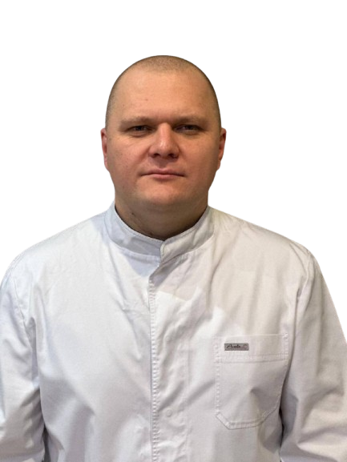
«Лично контролирую качество выезда наших врачей»
Цены актуальны и проверены на:
5 000 ₽
8 000 ₽
12 000 ₽
12 000 ₽15 000 ₽
Оплатить услуги можно любым удобным для вас способом:
Перед оказанием платной помощи мы заключаем с вами договор. В нём указаны данные клиники, согласованные услуги, их стоимость и порядок оплаты.
После осмотра врач объяснит, какая помощь нужна и сколько она будет стоить. Все платные процедуры согласовываются с вами до их проведения. Если потребуется что-то дополнительное, врач сначала объяснит зачем это нужно и назовёт стоимость.
После оплаты у вас остаётся экземпляр договора и документ об оплате. При необходимости можно получить медицинскую выписку с информацией о проведённом лечении и назначениях.
Диспетчер принимает обращение, уточняет адрес и состояние пациента, затем согласовывает выезд. Специалист приезжает с необходимым оснащением, проводит осмотр и обсуждает дальнейшую помощь.
Оборудование выездного врача
Мы не работаем «на глазок»: каждый выезд оснащён как кабинет функциональной диагностики и неотложной помощи, перенесённый на адрес.
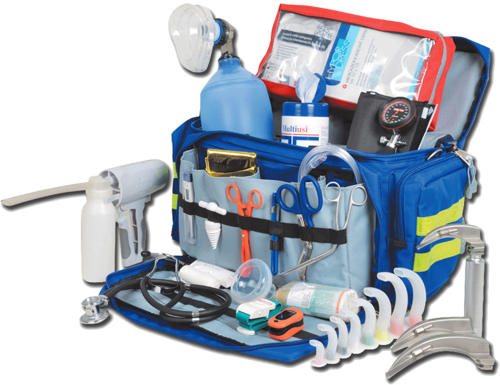
Что внутри
ручной респиратор Ambu SPUR II (мешок 1600 мл, с резервуаром для кислорода), ларингоскоп Heine Classic+ F.O. с клинками Макинтош №2–4, глоссофарингеальные и назофарингеальные воздуховоды, кислородный баллон 5 л с редуктором и кислородной маской.
Кто применяет
только врач с действующим сертификатом по неотложной медицине / анестезиологии-реаниматологии. Средний и младший медперсонал набор не применяет.
Когда открывается
Когда НЕ берём
при плановой консультации по вопросам лечения зависимости, если пациент в стабильном состоянии и нет признаков острой интоксикации или нарушения дыхания, реанимационный набор остаётся в машине; врач берёт с собой только необходимое для осмотра.
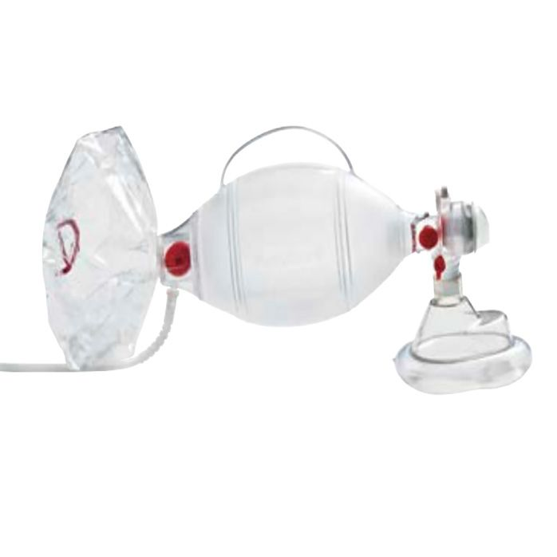
Как применяется
вентиляция по маске техникой «врач–помощник» (E–C-grip), 10–12 вдохов в минуту; при подключении к кислороду достигается FiO₂ до 100%. Контроль эффективности — по экскурсии грудной клетки и цвету кожи.
Критерий достаточности
SpO₂ ≥ 94% в течение 5 минут вентиляции. Не достигли — врач переходит к воздуховодам и готовит дыхательные пути к защите, одновременно вызывая реанимационную бригаду. Мешок Амбу не заменяет скорую — он удерживает пациента живым до её приезда.
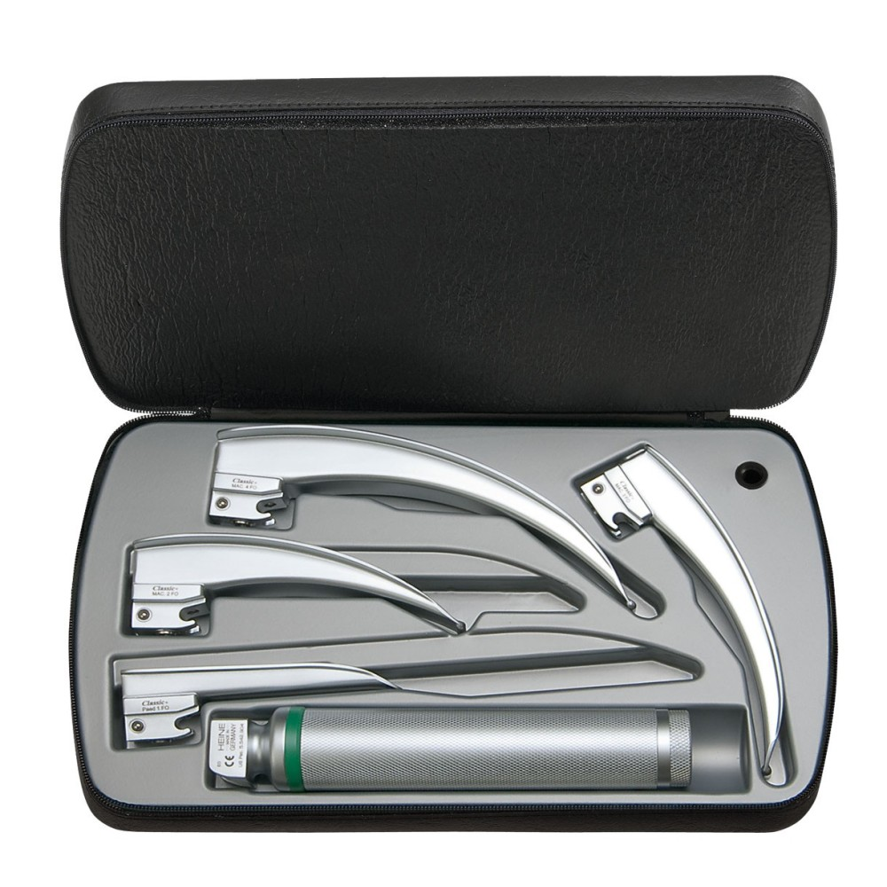
Специфика
оптоволоконная подсветка (не гаснет от толчков и мороза, в отличие от ламповых), рукоять с зарядкой в укладке, клинки №2 (дети), №3 (взрослые), №4 (крупные пациенты). Стерилизация после каждого применения — влажная термодезинфекция, пакет с индикатором, журнал учёта.
Когда доходим до ларингоскопа
только при неэффективности маочной вентиляции. Интубация на адресе выполняется врачом с правами анестезиолога-реаниматолога и оформляется в протоколе неотложной помощи; во всех остальных случаях до прибытия скорой — восстановление проходимости воздуховодами.
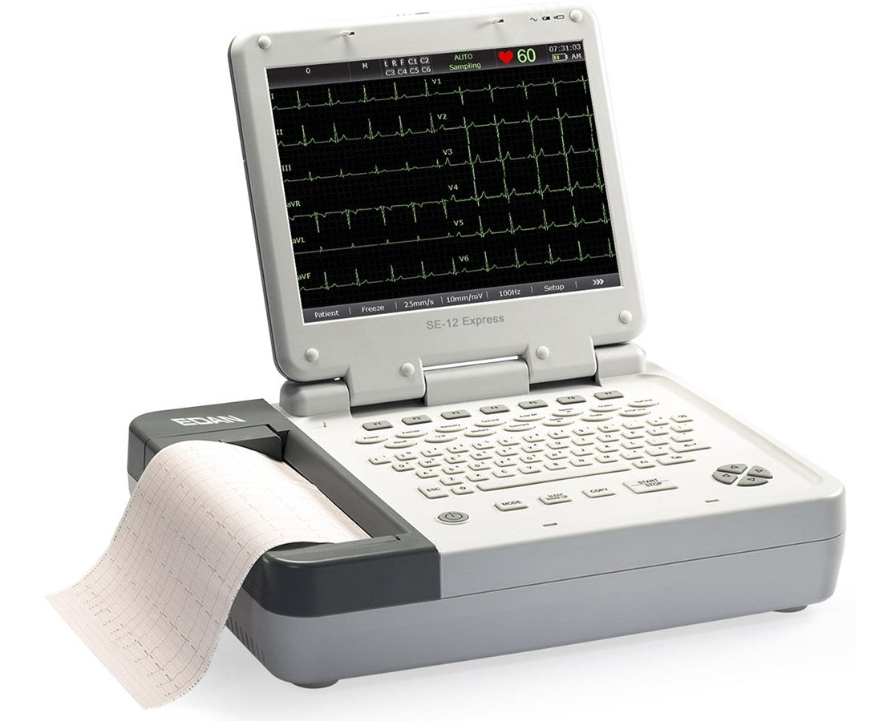
Что снимаем
12-канальная ЭКГ с автоматической интерпретацией и распечаткой на термобумаге на месте — результат пациент получает в руки до ухода врача. Аппарат распознаёт ритм пейсмейкера и имеет программу тромболизиса для ишемического инфаркта.
Протокол
10 электродов, запись 10 секунд с фильтрацией сетевых помех 50 Гц; при подозрении на ишемию — дополнительно правосторонние (V3R–V4R) и задние (V7–V9) отведения.
Обязательные показания (выезд не считается завершённым без ЭКГ)
Что дальше с результатом
ЭКГ с расшифровкой заносится в карту вызова; при инфарктных изменениях фото передаётся кардиологу для решения о тромболизисе/госпитализации до прибытия скорой.
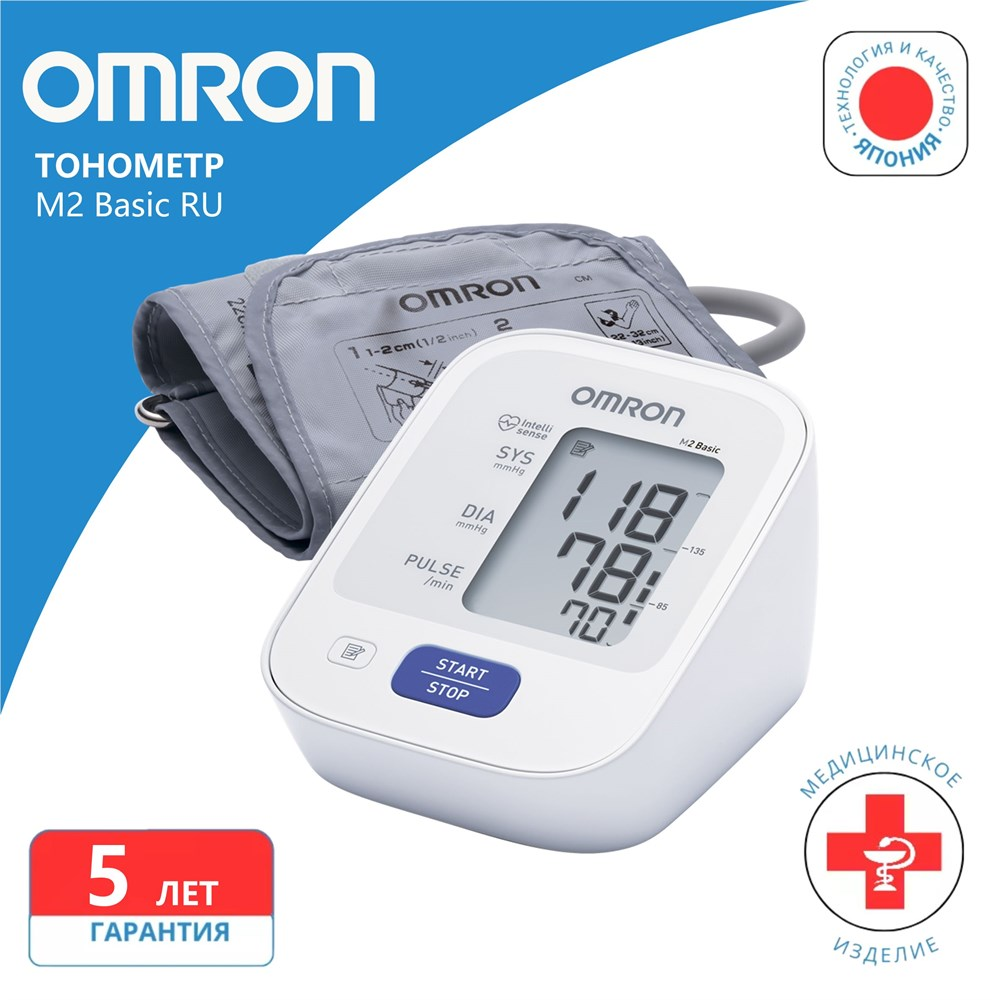
Протокол измерения
5 минут покоя, манжета на уровне сердца, рука без одежды. Первое измерение — на обеих руках, далее — на руке с большим давлением; повторное через 2–3 минуты, чтобы отсечь «эффект белого халата».
Регистрация
давление и пульс записываются в карту с указанием руки и положения пациента (лёжа/сидя).
Особый случай
при окружности плеча > 42 см стандартная манжета Omron M2 завышает цифры — обязательна усиленная манжета Omron HEM-RML31, она лежит в машине отдельно.
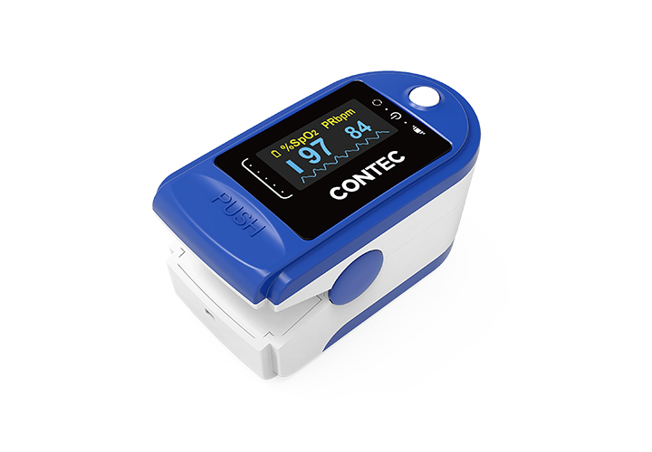
Что фиксируем
SpO₂ и пульс непрерывно, контроль не реже одного раза в 10 минут при наблюдении.
Критические пороги
Ограничения — честно
Contec CMS50D отлично работает на обычных пациентах, но при холодных руках, шоке или отёках показания недостоверны — врач оценивает цифру вместе с клиникой, а не вместо неё.
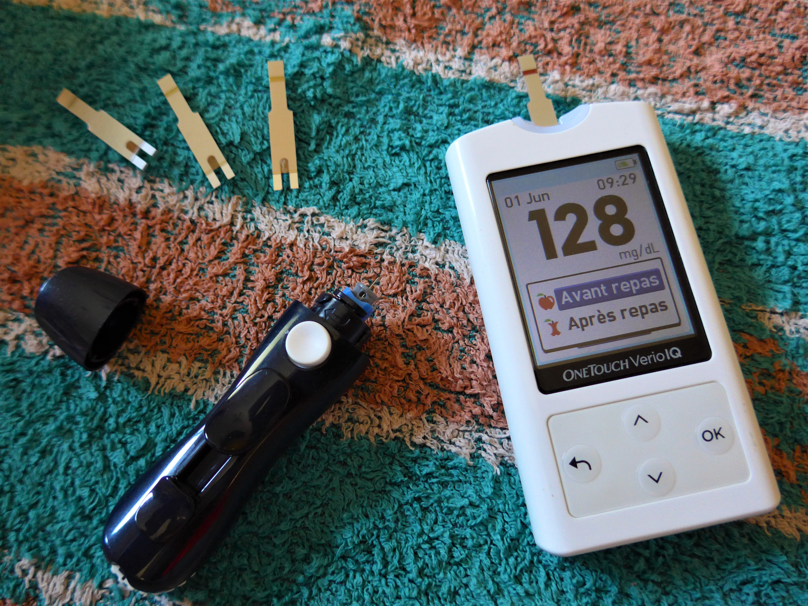
Точность
Погрешность ±10% — достаточно для экстренной диагностики гипогликемии на адресе.
Когда замер обязателен
Порог действий
глюкоза < 3,9 ммоль/л — внутривенно 40% раствор глюкозы по протоколу (или сладкий раствор per os при сохранном глотании), обязательный контроль через 15 минут до нормализации сознания.
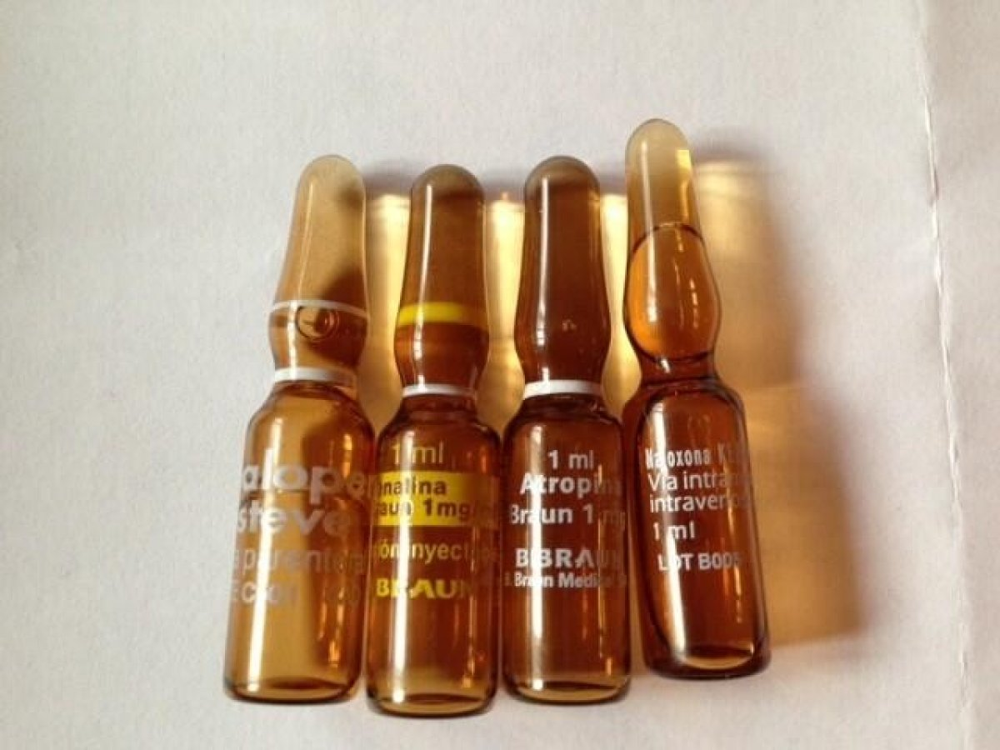
Состав
лекарственные препараты и расходные материалы для помощи при алкогольном абстинентном состоянии (синдроме отмены алкоголя) и сопутствующих симптомах. Конкретные препараты и способ введения врач выбирает после осмотра с учётом состояния пациента и противопоказаний; инфузионная терапия назначается по показаниям.
Контроль и маршрутизация
укладка опечатана, сроки годности и комплектность проверяются до каждой смены, журнал контроля ведёт старшая медсестра; просроченные препараты заменяются до выезда. При средней или тяжёлой степени состояния, судорогах либо отсутствии эффекта от амбулаторного лечения врач организует госпитализацию.
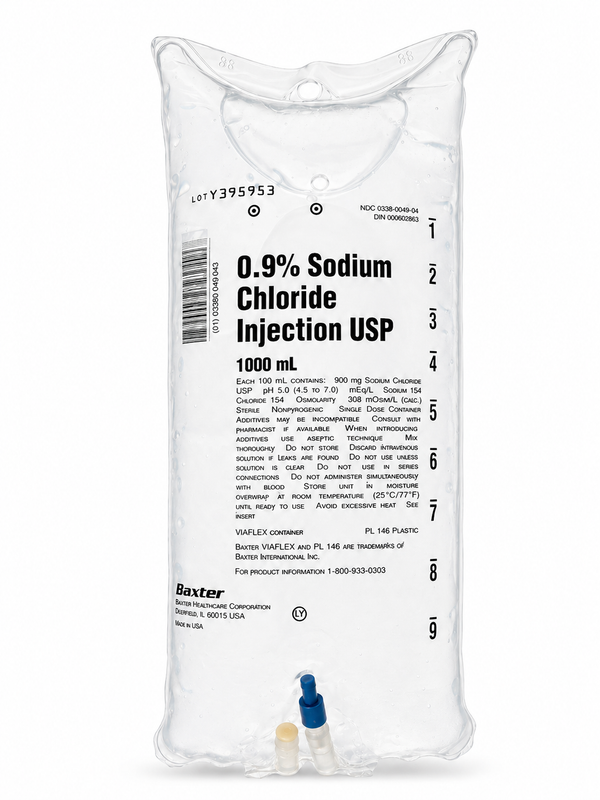
Что возим
физраствор 0,9% NaCl (Дальхимфарм), Рингер-лактат (Озон), 5% глюкоза (Гемофарм); системы для инфузии с воздухоуловителем, катетеры в/в 18G–22G, жгут, антисептик. Объёма укладки хватает на полноценную стартовую инфузионную терапию — не на один «для галочки» флакон.
Когда инфузия ставится на адресе
Когда НЕ ставим
«капельница для профилактики», «почистить сосуды», «для тонуса» — без клинических показаний врач отказывает и объясняет почему. Это защищает и пациента, и врача.
Базовое время рассчитано автоматически через REST-сервис OSRM v5.24 (на базе графа дорог OpenStreetMap). Запрос выполняется по профилю driving (легковой автомобиль) от координат клиники (WGS 84) до геометрического центра района. В расчет заложена средняя разрешенная скорость по городу — 40–50 км/ч (с учетом дорожных знаков и светофоров).
Валидация данных: Математический расчет OSRM мы сверяем с историческими данными из нашей CRM-системы (анализ более 10000 реальных выездов). Это позволяет вычислить медианное время с учетом специфики городских маршрутов.
Ограничения: алгоритм использует статичные данные и не учитывает динамический трафик. Погрешность (дельта) в часы пик (08:00–09:30 и 17:30–19:30) составляет от +25% до +45% к базовому времени. В дождь или снег рекомендуем прибавлять +15 минут. Точный ETA (расчетное время прибытия) диспетчер подтвердит при оформлении заявки на основе live-данных навигатора.
Автомобили выездной службы
Врач приезжает не «на чём придётся»: автопарк подобран под задачи наркологического выезда — от срочного вызова при передозировке до планового вывода из запоя и транспортировки в стационар. Каждая машина проходит ежедневный осмотр перед сменой, техническое обслуживание каждые 10 000 км, сезонную смену резины (зима — с ноября по апрель, по региону) и застрахована по ОСАГО и КАСКО.
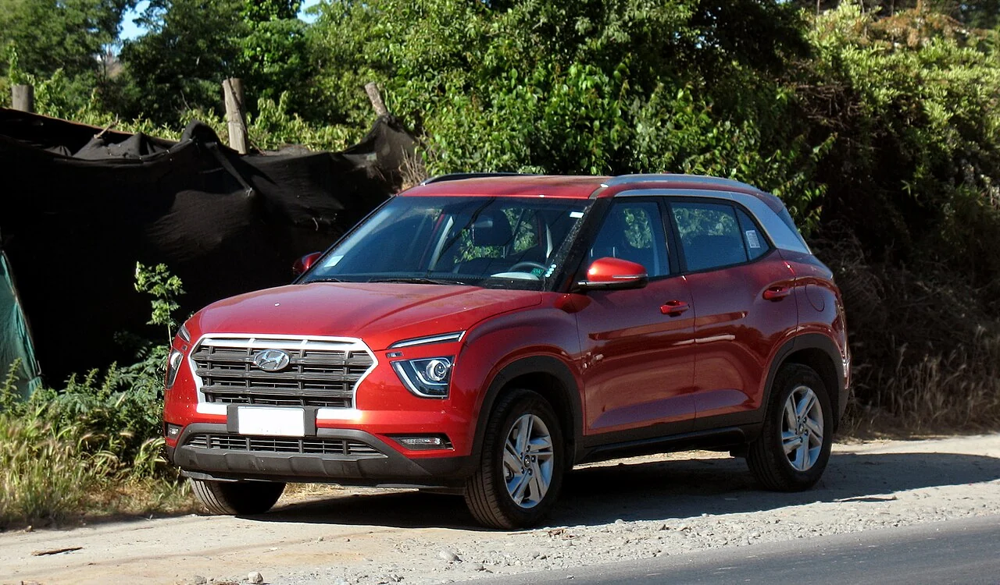
Год выпуска
2022, второе поколение (SU2).
Факты по машине
багажник 433 л, клиренс 190 мм. 433 л — это реанимационный кейс, инфузионная укладка и ЭКГ Cardiovit AT-102 в фирменном чемодане, при этом остаётся место для вещей пациента, которого после детоксикации часто нужно устроить в машине до состояния, когда его отпустят домой.
Зачем в парке
основная масса выездов — вывод из запоя на дому, снятие абстинентного синдрома, купирование похмелья. Creta проходит там, где фургон встанет или не развернётся: плотная застройка, узкие дворы, частный сектор. Высокая посадка — врач быстро оценивает пациента ещё у подъезда.
Когда выделяется
стандартные наркологические вызовы по городу. Реанимационный кейс и кислородный баллон 5 л в багажнике — всегда, независимо от типа вызова: алкогольная интоксикация с рвотой и риском аспирации — не редкость даже на «обычном» запое.
Год выпуска
2021.
Факты по машине
багажник 479 л, с системой VarioFlex (сдвижные/снимаемые задние сиденья) — до 588 л и до 1810 л со сложенным рядом. Практический смысл для выезда: при необходимости транспортировки пациента в стационар задний ряд раскладывается в ровную поверхность — пациент в состоянии средней тяжести едет лёжа, а не согнувшись.
Зачем в парке
выезды в ближайшие районы и посёлки — в частном секторе, где распространены запойные состояния, важен запас хода и устойчивость на разбитой дороге. Клиренс 194 мм и мотор 1.4 TSI (150 л.с.) — укладывается в ориентир «до 40 минут до адреса» даже за городом, что критично при передозировках и острой алкогольной интоксикации.
Когда выделяется
вызовы с транспортировкой (показания к стационару: не купируемая рвота, судороги, делирий), выезды с двумя специалистами — врач + фельдшер, стандартная наркологическая бригада.
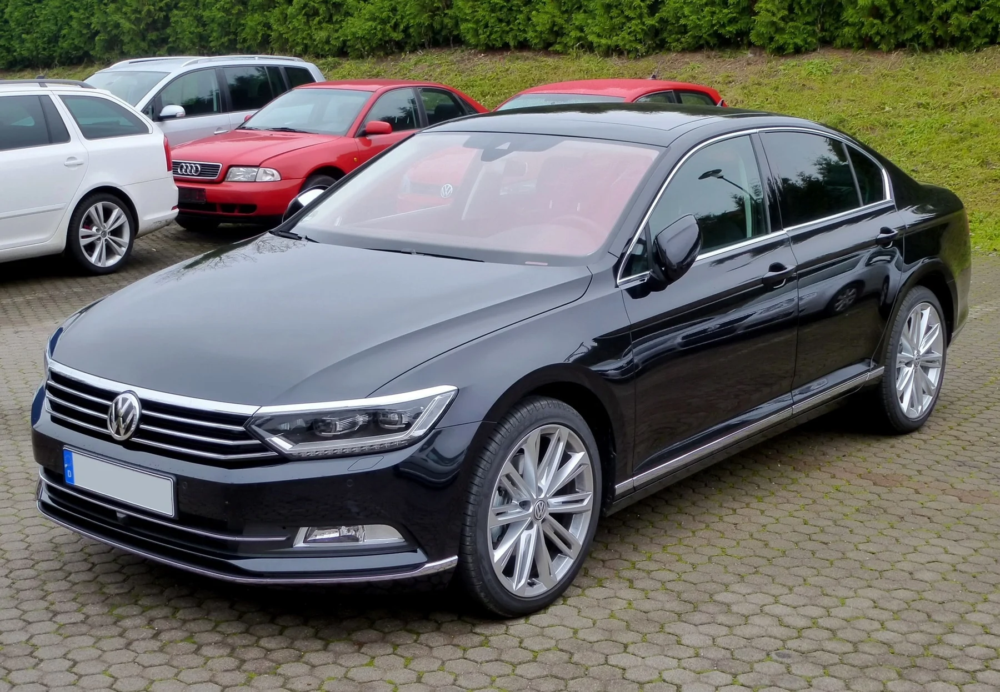
Год выпуска
2020, кузов B8.
Факты по машине
седан, багажник 586 л — самый большой в легковом классе. 586 л вмещает полный комплект выездного нарколога (реанимационный кейс + укладки + ЭКГ) с запасом на 30–40%, что важно зимой, когда к комплекту добавляются тёплые вещи пациента и дополнительные расходники.
Зачем в парке
экстренные вызовы, где решают минуты: острая алкогольная интоксикация с угнетением дыхания, передозировка психоактивными веществами, смешанные отравления. 2.0 TDI с автоматом держит трассу устойчиво, шумоизоляция позволяет врачу по дороге связаться с токсикологом и согласовать тактику до прибытия в стационар.
Когда выделяется
экстренные и неотложные вызовы, межгород до 100–150 км, эвакуация пациента в наркологический стационар другого города. Стандартные запои на Passat не ездим — экономика вызова не та, его держим для состояний, где скорость — часть лечения.
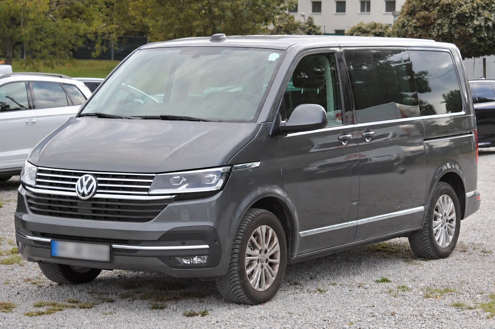
Год выпуска
2021, T6.1.
Факты по машине
багажное отделение ≈750 л в короткой базе, салон с капитанскими креслами на поворотном механизме. Раздельные кресла второго ряда: пациент едет на одном, рядом — врач с пульсоксиметром на пальце пациента и видом на монитор, а не через плечо водителя. При агрессивном поведении пациента в абстиненции раздельные кресла и просторный салон — физическая безопасность бригады.
Зачем в парке
выезды укомплектованной бригады (врач + фельдшер), транспортировка пациентов в стационар, выезды к пациентам с сопровождающими, паллиативные перевозки. В наркологии часто вызывают родственники пациента — в Multivan врач, пациент и два сопровождающих размещаются без складок.
Когда выделяется
по заявке диспетчера, когда в карточке вызова указано: «пациент агрессивен», «нужен подъём с этажа», «едет с сопровождающими», «бригада из двух специалистов». Заявка «стандартный вывод из запоя» — Multivan не тратим, его пробег дороже.
Фиксирует адрес, этаж, наличие лифта, телефон, жалобы и состояние пациента (контактен / не контактен / агрессивен). От этого зависят машина и состав бригады.
Ориентир по времени называют сразу и фиксируют в СМС после звонка. При опоздании больше 15 минут причину указывают в карте вызова.
Водитель проверяет топливо, давление в шинах, ближний свет и крепление укладок. Если любой пункт не в порядке, машина не выезжает, а вызов передают другому экипажу.
Сводные данные о выездной помощи за последние 12 месяцев.
~24 мин
Среднее время прибытия бригады
В черте Иваново: от нажатия «В пути» до геометки на адресе.
390+
Подтверждённых выездов за год
Общее количество первичных и повторных вызовов к одному пациенту.
47%
Около 183 ночных вызовов
Доля обращений с 22:00 до 08:00 по времени поступления звонка в Mango.
97%
Около 378 случаев
Стабилизация состояния на дому без вызова скорой помощи.
3%
Около 12 экстренных госпитализаций
Тяжёлая передозировка, делирий, судорожный синдром или ЧДД менее 10.
Соответствие законодательству: Все данные в статистике являются строго обезличенными. Обработка персональных данных (ФИО, адрес, телефон) осуществляется в закрытом контуре CRM в соответствии с ФЗ-152 «О персональных данных». Публикации подлежат только агрегированные цифры без привязки к конкретным пациентам.
Телефония Mango автоматически создает карточку обращения в Битрикс24 при первом гудке. Заполняются поля: дата, точное время, район выезда (город/область), тип запрашиваемой помощи (вывод из запоя, капельница на дому и др.).
Врач получает задачу в мобильном приложении Битрикс24. Время выезда фиксируется нажатием кнопки «В пути» с привязкой к GPS-координатам. Это исключает ручную корректировку времени диспетчером.
Карта не может быть закрыта без внесения объективных данных (АД, пульс, ЧДД, степень опьянения) и выбора исхода: «Стабилизирован на месте» или «Госпитализирован».
Как измеряем: автоматическая сверка логов Mango с закрытыми картами Битрикс24 (выявление «потерянных» звонков) + выборочный аудит 10% медицинских карт руководителем отдела контроля качества (проверка соответствия времени прибытия GPS-меткам и корректности указанных дозировок препаратов).
Погрешность возникает за счет технических сбоев связи или человеческого фактора при экстренном закрытии карты.
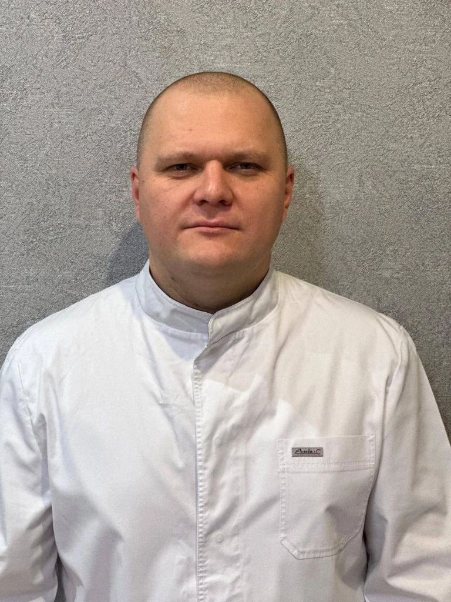
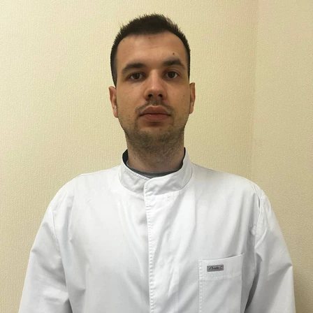
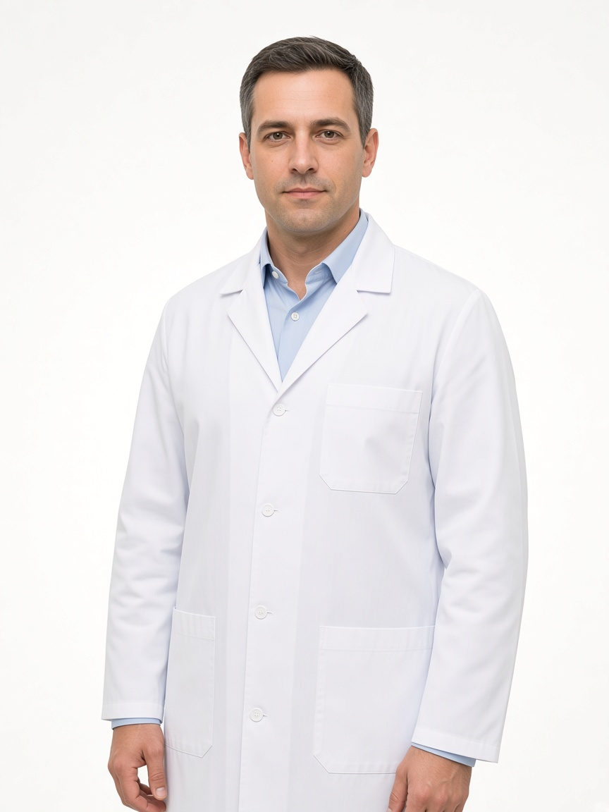
Каждый врач проходит ежегодную профессиональную переквалификацию
Проверить наших врачей вы можете на:
Документы, подтверждающие право на оказание наркологической и медицинской помощи
ООО «Доверие+»
ИНН: 7604396238;
КПП: 760401001;
ОГРН: 1247600002330;
Адрес: 150040, г. Ярославль, ул. Свердлова, зд. 25Г, пом. 2;
Директор: Волков Иван Александрович;
Медицинская лицензия — Л041-01132-76/01205418, выдана 20.05.2024 Министерством здравоохранения Ярославской области;
Начало срока действия лицензии — 20 мая 2024 г.;
Окончание срока действия лицензии — бессрочно.
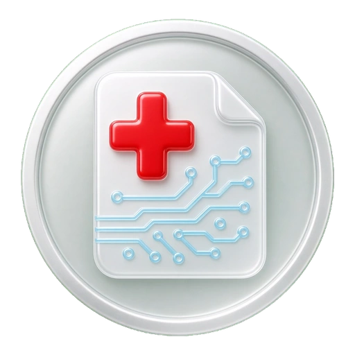
Все ссылки ведут на официальный портал клинических рекомендаций Минздрава РФ. Актуально на 2026 год
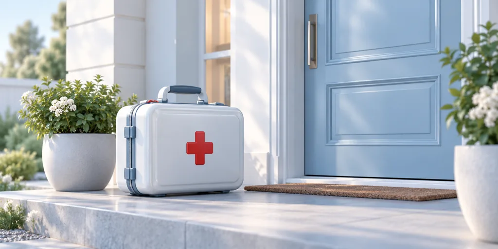
Диспетчер собирает первичную информацию о пациенте. В зависимости от характера вызова к помощи привлекают врача-нарколога, терапевта, анестезиолога-реаниматолога или фельдшера соответствующей квалификации.
В выездной службе работают сотрудники с опытом скорой помощи, анестезиологии и реанимации, включая специалистов с дополнительной подготовкой по сердечно-лёгочной реанимации и диагностике.
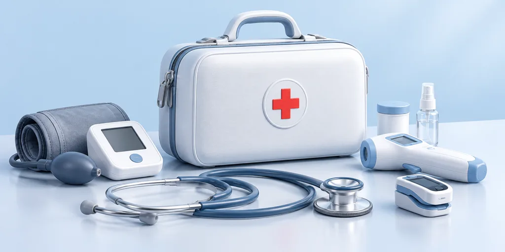
Для оценки и контроля состояния применяются измерение жизненно важных показателей, мониторинг, ЭКГ и экспресс-исследования по медицинским показаниям. Состав оснащения зависит от направленной бригады.
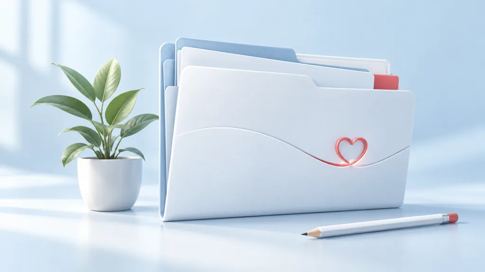
Помощь не ограничивается одной процедурой. По результатам осмотра специалист даёт рекомендации о дальнейшем лечении, а при необходимости — о госпитализации или наблюдении в клинике.
Клиника «Свой нарколог» в Иваново и партнёрская площадка в Ярославле
Иваново, ул. Жиделёва, 21, лит. А
Ярославль, ул. Свердлова, 25г